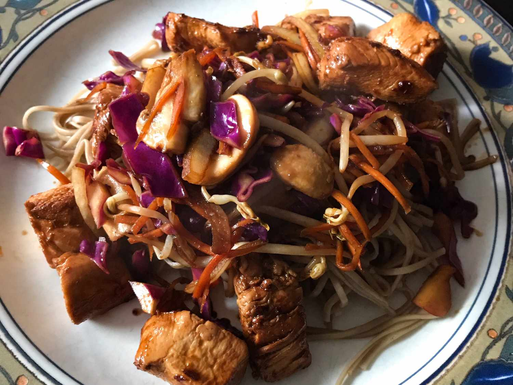

Japanese Yakisoba Chicken

Description
Yakisoba chicken is a Japanese stir-fry featuring savory stir-fried noodles (yakisoba) with tender pan-fried chicken and crisp vegetables. Think of it as a quick, flavorful pasta dish with an Asian twist, often seasoned with soy sauce, ginger, and garlic. It's a popular street food and homey meal, enjoyed for its umami-rich taste and satisfyingly chewy texture.
Ingredients
- ½ teaspoon sesame oil
- 1 tablespoon canola oil
- 2 tablespoons chile paste
- 2 cloves garlic, chopped
- 4 skinless, boneless chicken breast halves - cut into 1 inch cubes
- ½ cup soy sauce
- 1 onion, sliced lengthwise into eighths
- ½ medium head cabbage, coarsely chopped
- 2 carrots, coarsely chopped
- 8 ounces soba noodles, cooked and drained
Directions
- In a large skillet combine sesame oil, canola oil and chili paste; stir-fry 30 seconds. Add garlic and stir fry an additional 30 seconds. Add chicken and 1/4 cup of the soy sauce and stir fry until chicken is no longer pink, about 5 minutes. Remove mixture from pan, set aside, and keep warm.
- In the emptied pan combine the onion, cabbage, and carrots. Stir-fry until cabbage begins to wilt, 2 to 3 minutes. Stir in the remaining soy sauce, cooked noodles, and the chicken mixture to pan and mix to blend. Serve and enjoy!
Homepage